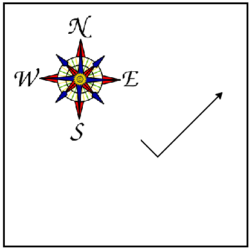
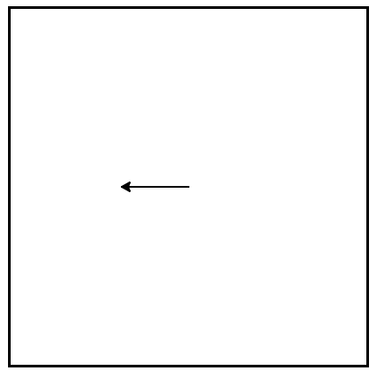

1.12. 🐢 Our First Turtle Program¶
Let’s try a couple of lines of Python code to create a new turtle and start drawing a simple figure like a rectangle. We will refer to our first turtle using the variable name antara, but remember that you can choose any name you wish as long as you follow the naming rules from the previous chapter.
The program as shown will only draw the first two sides of the rectangle. After line 4 you will have a straight line going from the center of the drawing canvas towards the right. After line 6, you will have a canvas with a turtle and a half drawn rectangle. Press the run button to try it and see.
Here are a couple of things you’ll need to understand about this program.
The first line tells Python to load a module named turtle. You will learn about modules in a later chapter, for now you can think of a module as an external library of code that is available to use.
Using the turtle module allows us to easily get a window up on screen and a turtle that can be used to draw pictures in that window. There are lots of details in this code that we will explain more later, for now, here is a brief explanation:
Line 2 creates a window, which has a name ‘wn’.
Line 3 creates a turtle, which has a name ‘antara’.
These first three lines set us up so that we are ready to do some drawing.
In lines 4-6, we instruct the turtle ‘antara’ to move and to turn. antara the turtle is an object and has things it can do. The antara.<action>(<info>) notation, tells Python that the turtle antara should do certain things (move forward, turn left) and the information in the brackets gives details on how to do those things (how far to move, how much to turn).
Complete the rectangle …
Modify the program by adding the commands necessary to have antara complete the rectangle.
Check your understanding
- North
- Some turtle systems start with the turtle facing north, but not this one.
- South
- No, look at the first example with a turtle. Which direction does the turtle move?
- East
- Yes, the turtle starts out facing east.
- West
- No, look at the first example with a turtle. Which direction does the turtle move?
Which direction does the Turtle face when it is created?
Mixed up programs Throughout this textbook, you’ll see many examples of ‘Mixed up programs’ like the one below. These are also known as Parsons’ Problems. These are really helpful exercises for new programmers, because they allow you to focus just on the sequencing of the program, and not worry about the syntax (i.e. you don’t have to worry about making typos or remembering exactly how a program instruction is supposed to be written). Drag the blocks from the grey box on the left to the yellow box on the right, putting them in the correct order. Click the ‘Check’ button to test your solution.
The following program uses a turtle to draw a capital L as shown in the picture to the left of this text:

But the lines are mixed up. The program should do all necessary set-up: import the turtle module, get the window to draw on, and create the turtle. Remember that the turtle starts off facing east when it is created. The turtle should turn to face south and draw a line that is 150 pixels long and then turn to face east and draw a line that is 75 pixels long. We have added a compass to the picture to indicate the directions north, south, west, and east. Your program doesn’t neeed to draw the compass!
Drag the blocks of statements from the left column to the right column and put them in the right order. Then click on Check Me to see if you are right. You will be told if any of the lines are in the wrong order.
The following program uses a turtle to draw a checkmark as shown to the left,
{kind=link}
But the lines are mixed up. The program should do all necessary set-up: import the turtle module, get the window to draw on, and create the turtle. The turtle should turn to face southeast, draw a line that is 75 pixels long, then turn to face northeast, and draw a line that is 150 pixels long. We have added a compass to the picture to indicate the directions north, south, west, and east. Northeast is between north and east. Southeast is between south and east.
Drag the blocks of statements from the left column to the right column and put them in the right order. Then click on Check Me to see if you are right. You will be told if any of the lines are in the wrong order.
The following program uses a turtle to draw a single line to the west as shown to the left:
{kind=link}
But the program lines are mixed up. The program should do all necessary set-up: import the turtle module, get the window to draw on, and create the turtle. The turtle should then turn to face west and draw a line that is 75 pixels long.
Drag the blocks of statements from the left column to the right column and put them in the right order. Then click on Check Me to see if you are right. You will be told if any of the lines are in the wrong order.